控制平面部署
K8s Master节点配置
⚠️ 节点基础环境与IP规划
- 系统版本: CentOS 7.5 (1804)（基于初始服务器搭建基础环境）
- Master节点IP: 192.168.126.132
- Node1节点IP: 192.168.126.133
- Node2节点IP: 192.168.126.134
- 网络段: [192.168.126.0/24]
---
1. 节点基础环境配置
完成初始服务器搭建后，克隆一台Master节点做基础环境优化，适配K8s集群部署要求。
1.1 配置静态IP
将网卡IP设置为静态模式（已配置完成后验证方式如下），确保节点IP固定不漂移：
# 查看网卡IP信息
ip a
# 验证IP配置模式为手动（静态）
nmcli connection show ens33 | grep ipv4.method✅ 验证结果
ipv4.method 字段返回manual，且ip a查看ens33网卡为规划的192.168.126.132/24，即静态IP配置成功。
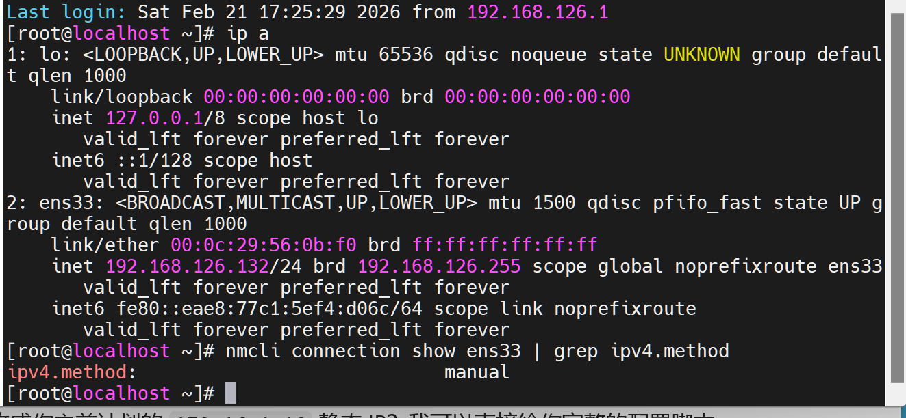
1.2 修改主机名
将节点主机名修改为k8smaster，便于集群节点识别：
# 永久修改主机名（重启生效）
hostnamectl set-hostname k8smaster
# 临时生效（无需重启）
export HOSTNAME=k8smaster
# 验证主机名
hostname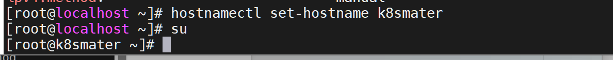
1.3 关闭防火墙
K8s集群各节点间需要大量端口通信，直接关闭防火墙避免端口拦截：
# 立即关闭防火墙
systemctl stop firewalld
# 禁止防火墙开机自启
systemctl disable firewalld
# 验证防火墙状态
systemctl status firewalld✅ 验证结果
状态显示inactive (dead)即为关闭成功。
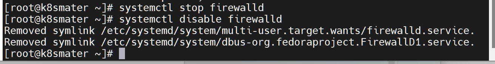
1.4 关闭SELinux
SELinux会限制容器的资源访问，永久关闭避免集群运行异常：
# 临时关闭SELinux（当前会话生效）
setenforce 0
# 永久关闭SELinux（重启生效）
sed -i 's/SELINUX=enforcing/SELINUX=disabled/' /etc/selinux/config
# 验证SELinux状态
getenforce✅ 验证结果
执行后返回Permissive即为临时关闭成功，重启后返回Disabled为永久关闭成功。
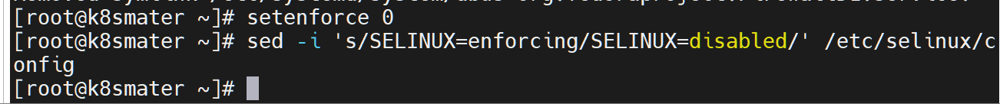
1.5 关闭Swap分区
K8s默认要求关闭Swap分区，否则会导致Pod调度和资源限制失效：
# 临时关闭Swap
swapoff -a
# 永久关闭Swap（注释fstab中Swap相关行）
sed -i '/swap/s/^/#/' /etc/fstab
# 验证Swap状态
free -h✅ 验证结果
free -h输出中Swap行显示0即为关闭成功。
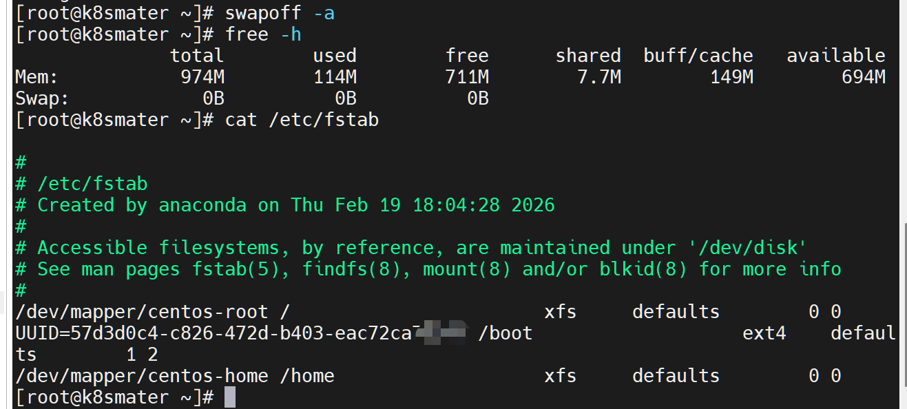
1.6 优化内核参数
配置K8s所需的内核参数，开启网桥转发、IP转发等功能：
# 创建k8s内核参数配置文件
cat > /etc/sysctl.d/k8s.conf << EOF
net.bridge.bridge-nf-call-ip6tables = 1
net.bridge.bridge-nf-call-iptables = 1
net.ipv4.ip_forward = 1
vm.swappiness = 0
EOF
# 加载网桥内核模块
modprobe br_netfilter
# 使内核参数立即生效
sysctl --system✅ 验证结果
执行sysctl --system后无报错，且返回配置的4个参数值均为1/0，即为生效。
---
2. 配置集群时间同步
K8s集群各节点时间必须一致，否则会导致证书、调度等功能异常，使用chrony实现时间同步。
2.1 安装chrony工具
yum -y install chrony2.2 修改chrony配置文件
配置本地Master为时间源，同时对接阿里云时间源，允许集群网段同步时间：
vim /etc/chrony.conf编辑文件，保留/添加以下核心配置：
server k8smaster iburst
server ntp.aliyun.com iburst
bindaddress 0.0.0.0
allow 192.168.126.0/24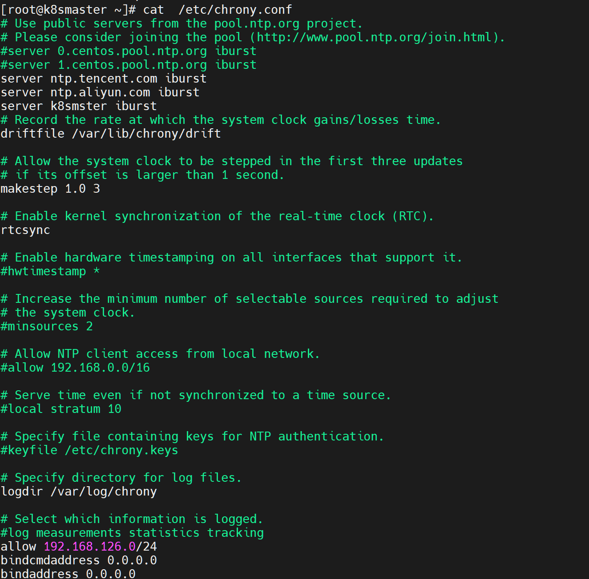
2.3 启动并启用chrony服务
# 开机自启chrony服务
systemctl enable chronyd.service
# 重启chrony服务使配置生效
systemctl restart chronyd.service
# 启用系统NTP同步
timedatectl set-ntp yes2.4 验证时间同步状态
# 查看系统时间同步状态
timedatectl status
# 查看chrony时间源同步状态
chronyc sources✅ 验证结果
- timedatectl status中
NTP service显示active；
- chronyc sources中时间源前显示
*（主同步源）或+（备用同步源）即为同步成功。
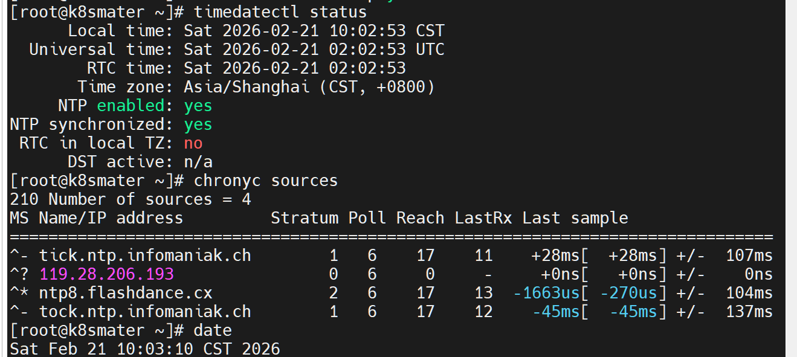
---
3. 配置IPVS模式
K8s的kube-proxy默认使用iptables，IPVS模式性能更优，适配高并发场景，提前配置IPVS相关模块。
3.1 清空现有iptables规则
# 清空filter表规则
iptables -F
# 设置INPUT链默认策略为接受
iptables -P INPUT ACCEPT
# 清空nat表规则
iptables -t nat -F3.2 安装ipset和ipvsadm工具
yum install ipset ipvsadm -y3.3 配置IPVS内核模块自加载
创建模块加载脚本，确保服务器重启后IPVS相关模块自动加载：
# 创建模块加载脚本
cat <<EOF > /etc/sysconfig/modules/ipvs.modules
#!/bin/bash
modprobe -- ip_vs
modprobe -- ip_vs_rr
modprobe -- ip_vs_wrr
modprobe -- ip_vs_sh
modprobe -- nf_conntrack_ipv4
EOF
# 为脚本添加执行权限
chmod +x /etc/sysconfig/modules/ipvs.modules
# 立即执行脚本加载模块
/bin/bash /etc/sysconfig/modules/ipvs.modules
# 验证模块加载状态
lsmod | grep -e ip_vs -e nf_conntrack_ipv4✅ 验证结果
执行后输出对应的模块名称及相关信息，即为加载成功。
---
4. Docker安装与配置
K8s基于容器运行，需安装指定版本Docker，且配置与K8s兼容的cgroup驱动。
4.1 安装Docker依赖包
yum install -y yum-utils device-mapper-persistent-data lvm24.2 配置阿里云Docker镜像源
yum-config-manager --add-repo http://mirrors.aliyun.com/docker-ce/linux/centos/docker-ce.repo4.3 安装指定版本Docker-CE
需安装与K8s 1.23.0兼容的20.10.24版本，避免版本冲突：
# 查看镜像源中支持的Docker版本
yum list docker-ce --showduplicates
# 安装指定版本Docker
yum install --setopt=obsoletes=0 docker-ce-20.10.24-3.el7 -y4.4 配置Docker核心参数
修改Docker cgroup驱动为systemd（与K8s一致），并配置国内镜像源加速：
# 创建Docker配置目录
mkdir -p /etc/docker/
# 编辑Docker守护进程配置文件
vim /etc/docker/daemon.json添加以下配置内容：
{
"exec-opts": ["native.cgroupdriver=systemd"],
"registry-mirrors": ["https://docker.1ms.run"]
}4.5 启动并启用Docker服务
# 重新加载系统守护进程
systemctl daemon-reload
# 重启Docker+开机自启+查看状态
systemctl restart docker && systemctl enable docker && systemctl status docker✅ 验证结果
Docker状态显示active (running)即为启动成功，执行docker -v可查看安装版本。
---
5. K8s核心组件安装
安装指定版本的kubeadm、kubelet、kubectl，配置阿里云K8s镜像源，避免官方源访问失败。
5.1 配置阿里云K8s YUM源
vim /etc/yum.repos.d/kubernetes.repo添加以下配置内容：
[kubernetes]
name=kubernetes
baseurl=http://mirrors.aliyun.com/kubernetes/yum/repos/kubernetes-el7-x86_64
enabled=1
gpgcheck=0
repo_gpgcheck=0
gpgkey=http://mirrors.aliyun.com/kubernetes/yum/doc/yum-key.gpg
http://mirrors.aliyun.com/kubernetes/yum/doc/rpm-package-key.gpg5.2 安装K8s 1.23.0核心组件
# 安装指定版本kubeadm、kubelet、kubectl
yum install kubeadm-1.23.0 kubelet-1.23.0 kubectl-1.23.0 -y
# 验证kubeadm版本
kubeadm version✅ 验证结果
执行后返回kubeadm version: &version.Info{Major:"1", Minor:"23", GitVersion:"v1.23.0"}即为安装成功。
5.3 配置kubelet核心参数
修改kubelet配置，使其与Docker的cgroup驱动一致，并启用IPVS模式：
vim /etc/sysconfig/kubelet添加以下核心配置：
KUBELET_CGROUP_ARGS="--cgroup-driver=systemd"
KUBE_PROXY_MODE="ipvs"❗ 配置说明
--cgroup-driver=systemd：与Docker的cgroup驱动保持一致，避免资源调度冲突；
KUBE_PROXY_MODE="ipvs"：启用kube-proxy的IPVS模式，提升集群服务转发性能。
---
6. 拉取K8s集群所需镜像
K8s init时会自动拉取官方镜像，国内访问缓慢，提前从阿里云镜像源拉取并打标为官方标签。
6.1 创建镜像拉取脚本
vim pull-k8s-images.sh添加以下脚本内容：
#!/bin/bash
# 定义K8s 1.23.0所需镜像列表
images=(
kube-apiserver:v1.23.0
kube-controller-manager:v1.23.0
kube-scheduler:v1.23.0
kube-proxy:v1.23.0
pause:3.6
etcd:3.5.1-0
coredns:v1.8.6
)
# 从阿里云镜像源拉取并打标
for imageName in "${images[@]}"; do
docker pull registry.cn-hangzhou.aliyuncs.com/google_containers/$imageName
docker tag registry.cn-hangzhou.aliyuncs.com/google_containers/$imageName k8s.gcr.io/$imageName
docker rmi registry.cn-hangzhou.aliyuncs.com/google_containers/$imageName
done
echo "✅ 所有 Kubernetes 镜像已拉取并打标完成！"
echo "📌 验证命令: docker images | grep k8s.gcr.io"6.2 执行脚本拉取镜像
# 添加执行权限
chmod +x pull-k8s-images.sh
# 执行脚本
bash pull-k8s-images.sh
# 验证镜像拉取结果
docker images | grep k8s.gcr.io✅ 验证结果
执行后显示脚本定义的7个镜像，标签与版本对应，即为拉取打标成功。
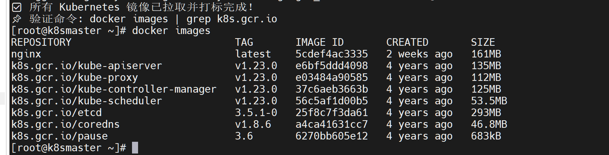
---
7. K8s Master节点初始化
使用kubeadm完成Master节点初始化，配置集群网段、API地址等核心参数。
7.1 执行初始化命令
kubeadm init \
--apiserver-advertise-address=192.168.126.132 \
--image-repository registry.cn-hangzhou.aliyuncs.com/google_containers \
--kubernetes-version=v1.23.0 \
--service-cidr=10.96.0.0/12 \
--pod-network-cidr=10.244.0.0/16❗ 参数说明
--apiserver-advertise-address：Master节点的IP（集群内其他节点访问的地址）；
--image-repository：指定阿里云镜像源，避免拉取官方镜像失败；
--service-cidr：K8s Service网段（固定10.96.0.0/12）；
--pod-network-cidr：Pod网段（适配flannel网络，固定10.244.0.0/16）。
7.2 保存集群加入命令
初始化成功后，终端会输出node节点加入集群的kubeadm join命令，务必复制保存（后续node节点配置需使用）。
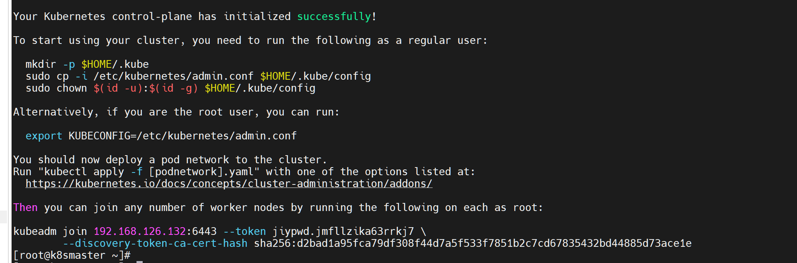
7.3 配置kubectl客户端访问权限
初始化后需配置kubectl的配置文件，否则无法执行集群操作命令：
# 创建kubectl配置目录
mkdir -p $HOME/.kube
# 复制集群配置文件到用户目录
sudo cp -i /etc/kubernetes/admin.conf $HOME/.kube/config
# 修改配置文件权限
sudo chown $(id -u):$(id -g) $HOME/.kube/config
# 验证kubectl配置
kubectl get nodes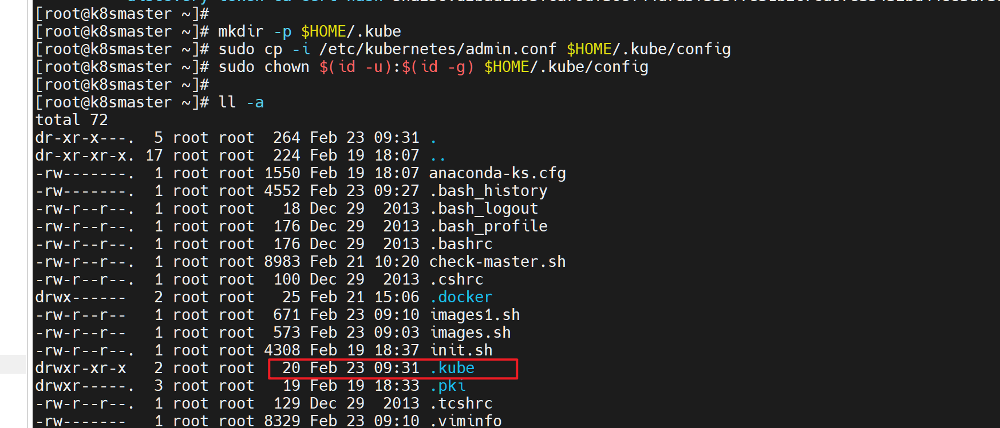
---
8. 配置Flannel网络插件
K8s集群需要网络插件实现Pod跨节点通信，Flannel是轻量级的网络插件，适配本次集群配置。
8.1 导入Flannel相关镜像
将Flannel镜像包导入Docker（本地镜像包方式）：
# 导入flannel主镜像
docker load -i flannel0.25.7.tar
# 导入flannel-cni插件镜像
docker load -i flannel-cni1.5.1.tar
# 验证镜像导入结果
docker images | grep flannel✅ 验证结果
执行后显示flannel和flannel-cni-plugin两个镜像，即为导入成功。
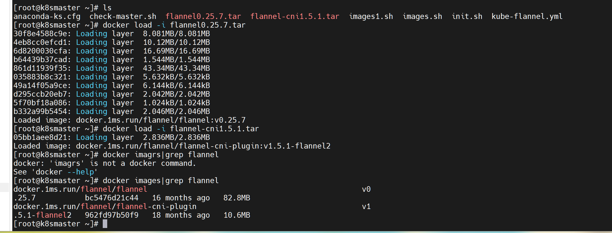
8.2 部署Flannel网络配置
将flannel的yaml配置文件上传到Master节点，执行部署命令：
# 部署Flannel网络
kubectl apply -f kube-flannel.yaml
# 验证网络插件部署状态
kubectl get pods -n kube-flannel✅ 验证结果
Pod状态显示Running，即为Flannel网络部署成功。
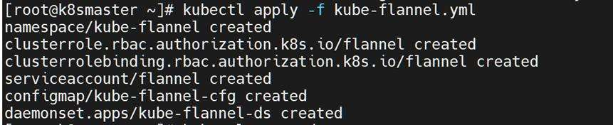
---
9. 验证Master节点安装状态
等待1-2分钟，让集群组件完全启动，执行以下命令验证Master节点是否就绪。
# 查看集群命名空间
kubectl get ns
# 查看节点状态
kubectl get nodes
# 查看kube-system命名空间下所有Pod状态
kubectl get pods -n kube-system✅ 最终验证结果
kubectl get nodes中k8smaster节点状态为Ready；
kube-system和kube-flannel命名空间下所有Pod状态均为Running；
- 以上条件满足，即为K8s Master节点配置完成。
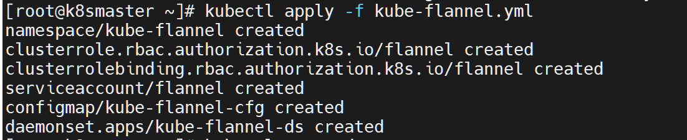
本阶段成果
完成 Master 节点环境准备、Docker 与 kubeadm 安装、集群初始化和 Flannel 网络部署，控制平面已经具备可用状态。